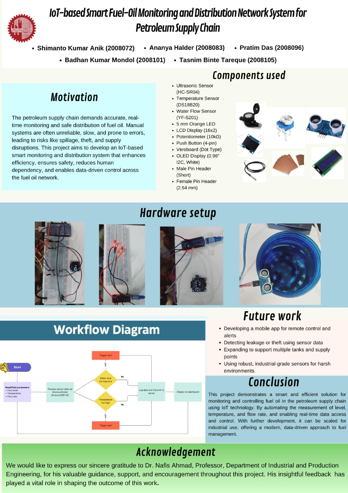

In industrial processes, water management systems, and chemical plants, accurate monitoring of liquid parameters such as level, temperature, and flow rate is essential for safety, quality control, and efficiency. Manual monitoring is often inaccurate and time-consuming, leading to delays or unsafe conditions. A sensor-based automated system can continuously monitor these parameters and send real-time data for process control or alert systems, reducing human error and operational risk.
| Device / Component | Quantity | Task / Function |
|---|---|---|
| HC-SR04 Ultrasonic Sensor | 1 | Measures liquid level by calculating distance to the surface |
| DS18B20 Digital Temperature Sensor | 1 | Monitors liquid or tank temperature |
| YF-S201 Flow Sensor | 1 | Measures liquid flow rate (liters/min) |
| Solenoid Valve | 1 | Controls fluid flow (automatic shut-off/on) |
| Relay Module | 1 | Controls motors or heaters |
| DC Water Pump | 1 | Pumps or circulates liquid as needed |
| LCD Display / OLED | 1 | Shows real-time readings |
| Arduino UNO / ESP32 / Raspberry Pi | 1 | Collects, processes, and sends sensor data |
| Jumper Wires, Breadboard, Power Module | Multiple | System connections and power distribution |

#include <Wire.h>
#include <Adafruit_GFX.h>
#include <Adafruit_SSD1306.h>
#define SCREEN_WIDTH 128
#define SCREEN_HEIGHT 64
Adafruit_SSD1306 display(SCREEN_WIDTH, SCREEN_HEIGHT, &Wire, -1);
// Water Flow Sensor
const int flowSensorPin = 2;
volatile int pulseCount = 0;
float calibrationFactor = 4.5;
unsigned long oldTime = 0;
float flowRate = 0;
float totalLitres = 0;
void pulseCounter() {
pulseCount++;
}
void setup() {
Serial.begin(9600);
pinMode(flowSensorPin, INPUT_PULLUP);
attachInterrupt(digitalPinToInterrupt(flowSensorPin), pulseCounter, FALLING);
if(!display.begin(SSD1306_SWITCHCAPVCC, 0x3C)) {
Serial.println(F("OLED not found"));
while(1);
}
display.clearDisplay();
display.display();
}
void loop() {
if (millis() - oldTime > 1000) {
detachInterrupt(digitalPinToInterrupt(flowSensorPin));
flowRate = ((1000.0 / (millis() - oldTime)) * pulseCount) / calibrationFactor;
oldTime = millis();
float litres = (flowRate / 60.0);
totalLitres += litres;
pulseCount = 0;
// Draw UI
display.clearDisplay();
// Header
display.setTextSize(1);
display.setTextColor(SSD1306_WHITE);
display.setCursor(0, 0);
display.println(" Water Flow Monitor ");
display.drawLine(0, 10, 128, 10, SSD1306_WHITE);
display.setTextSize(2);
display.setCursor(0, 16);
display.print(flowRate, 1);
display.setTextSize(1);
display.setCursor(100, 22);
display.println("L/m");
display.setTextSize(1);
display.setCursor(0, 42);
display.print("Total: ");
display.setTextSize(2);
display.setCursor(60, 36);
display.print(totalLitres, 1);
display.setTextSize(1);
display.setCursor(112, 44);
display.println("L");
display.display();
attachInterrupt(digitalPinToInterrupt(flowSensorPin), pulseCounter, FALLING);
}
}
#include <Wire.h>
#include <LiquidCrystal_I2C.h>
#include <OneWire.h>
#include <DallasTemperature.h>
#define ONE_WIRE_BUS 14 // D5 (GPIO 14) for DS18B20
#define I2C_SDA 4 // D2 (GPIO 4) for LCD
#define I2C_SCL 5 // D1 (GPIO 5) for LCD
OneWire oneWire(ONE_WIRE_BUS);
DallasTemperature sensors(&oneWire);
LiquidCrystal_I2C lcd(0x27, 16, 2); // I2C address 0x27, 16x2 LCD
void setup() {
Wire.begin(I2C_SDA, I2C_SCL);
lcd.begin(16, 2);
lcd.backlight();
sensors.begin();
lcd.setCursor(0, 0);
lcd.print("Temp Sensor Init");
delay(1500);
lcd.clear();
}
void loop() {
sensors.requestTemperatures();
float tempC = sensors.getTempCByIndex(0);
lcd.setCursor(0, 0);
if (tempC == -127.0) {
lcd.print("Sensor Error ");
} else {
lcd.print("Temp: ");
lcd.print(tempC, 1);
lcd.print((char)223);
lcd.print("C ");
}
delay(1000);
}